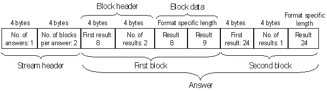

ERRE? - (Expected and Received Results of Events)
The ERRE? query returns measurement values that were generated from a pattern of the previously performed test. The query returns one answer per pin.
The measurements must have been executed for DC Scale pins from a test point pattern, by a DC event or, for digital pins, by a MEAS instruction within a DC pattern (for DC patterns, see Executing PPMU tests from a pattern). Events (or MEAS instructions) that do not generate a result (for example, setMeasureRange) are not reported. For DC Scale pins, ERRE? is the counterpart to EMAP?. For such pins, ERRE? can also return expected data.
Note that ERRE? can return the values produced by a DC pattern only on Pin Scale 9G cards. Observe also that ERRE? cannot return Pass/Fail results of a DC pattern (as required with measurement mode PMUM, see the MSET command).
With this command you can retrieve site specific information (only one site can be in focus at a time). For the site in focus, SmarTest displays results in the Testflow Editor and in the result tools. Also, any firmware queries report setup and results for the site currently in focus only.
Predependencies
If result data are requested, a test point pattern must have been executed for DC Scale pins, or a DC pattern for digital pins.
Syntax
ERRE? {type}, {resultIndex}, {numResults}, {data_format}, {rep_mode}, [byte_max] [,gang_index], {(pinlist)}returns:
ERRE {type}, {resultIndex}, {numResults}, {data_format}, {rep_mode}, [error_status] [, gang_index], {(pin)}, {#spec(data)}type |
The supported types are:
|
resultIndex |
The index of the first result to be read. Only test point operations (MEAS instructions) that provide a result are counted, starting from 0. |
numResults |
The number of results to be retrieved. |
data_format |
Specifies the binary data format of #spec(data). The DC Scale cards DPS32, VI32, and UHC4 / UHC4T, as well as DC patterns, support both formats.
|
rep_mode |
Specifies the reporting mode. Possible values are:
|
byte_max |
In the query, this parameter specifies the maximum number of bytes that may be returned. This option can be used for the reporting mode EOLY, where the size of the data that will be returned cannot be calculated beforehand. In the reply, this parameter is used to indicate the reason in case that not all the requested results can be returned:
|
gang_index |
The index within the ganged channels for which data will be answered. If this parameter is used, the connect_state (set with PSLR) must be hdig or norm_hdig. This only applies to test point measurements. |
pinlist |
DC Scale pins for which no test point pattern has been executed and digital pins for which no DC pattern has been executed will be ignored. |
#spec(data) |
The binary data that are returned. The general format is: #Nn1n2n...nNdata_stream The N digit defines the number of the digits ni (1 ≤ i ≤ N) that specify the length of data_stream in bytes. The data stream itself consists of a stream header and one or more answers (only one answer for data formats 0 and 1), where every answer contains the same number of data blocks. The stream header defines
Every data block consists of a block header and one or more data units each of which contains the result of one test point measurement or MEAS instruction (DC pattern). The block header defines
If rep_mode is set to ALL, there will be only one block; if it is set to EOLY, there can be more than one. The length of the data units depends on the selected format and on the selected type. If type is set to ALL, each data unit consists of the expected data and the received data in this order. Graphically, the structure can be illustrated by a simple example of the EOLY reporting mode with type RCV as follows:
|

|
|
Binary data formats
There are currently two data formats, 0 and 1.
Data format 0
This format, which is only available for type RCV, only contains the received data, one byte for each measurement. The individual bits must be decoded as follows:
Content |
Bits |
Description |
|---|---|---|
Compare result |
0 (LSB) |
Upper limit. The meaning of this flag is different for test point results and DC pattern results. For test points, it is set to 1 if all of the following conditions are satisfied:
For DC patterns, the flag is set to 1 if one of the following conditions is met:
|
|
1 |
Lower limit. The meaning of this flag is different for test point results and DC pattern results. For test points, it set to 1 if all of the following conditions are satisfied:
For DC patterns, the flag is set to 1 if one of the following conditions is met:
|
|
2 |
Status information. This flag is set to 1 if at least one of the following conditions is satisfied:
|
Status information |
3 |
Low clamp violation. This flag is set to 1 if there is a low clamp violation. But note that it is evaluated for the status information (bit 2) only if the following additional conditions are satisfied:
This flag is not set for DC patterns. |
|
4 |
High clamp violation. This flag is set to 1 if there is a high clamp violation. But note that it is evaluated for the status information (bit 2) only if the following additional conditions are satisfied:
This flag is not set for DC patterns. |
|
5 |
Measurement range exceeded. This flag is set to 1 if the measurement range is exceeded. But note that it is evaluated for the status information (bit 2) only if the following additional conditions are satisfied:
|
|
6 |
Distance too small. This flag is set to 1 if the distance between two consecutive measurements is too small. It is always evaluated for the status information (bit 2), even if the measurement result is masked. This flag is not set for DC patterns. |
|
7 (MSB) |
Type mismatch. This flag is set to 1 if the measurement type does not match the measurement range. It is always evaluated for the status information (bit 2), even if the measurement result is masked. |
Data format 1
This format, which is available for all three types (RCV, EXP, and ALL), can also accommodate the expected data. One expected data block covers one event (td element defined by DFTD). The block format is as follows:
Content |
Bytes |
Bits |
Description |
|
|---|---|---|---|---|
Result checks
|
1 unsigned
|
0 (LSB) |
Set to 1 if lower limit is checked (failBelowLowLimit attribute of measure operation set to true with DFTD). |
|
1 |
Set to 1 if higher limit is checked (failAboveHighLimit attribute of measure operation set to true with DFTD). |
|||
2 |
Set to 1 if one of the configurable bits 3 through 5 is set (status information). |
|||
Status information
|
3 |
Set to 1 if low clamp violation is checked (failOnLowClamp attribute of measure operation set to true with DFTD). |
||
4 |
Set to 1 if high clamp violation is checked (failOnHighClamp attribute of measure operation set to true with DFTD). |
|||
5 |
Set to 1 if the measurement range is checked (failOnOutOfRange attribute of measure operation set to true). |
|||
6 |
Always set to 1 (distance too small). |
|||
7 (MSB) |
Always set to 1 (type mismatch). |
|||
Measurement configuration |
1 unsigned |
(LSB) 0,1,2
|
001 Event contains Measure operation with type voltage. |
|
010 Event contains Measure operation with type current. |
||||
Lower value set |
3 |
Set to 1 if a lower limit is specified, otherwise 0. |
||
Upper value set |
4 |
Set to 1 if an upper limit is specified, otherwise 0. |
||
Reserved |
5,6,7 (MSB) |
|
||
Lower compare value |
8 double, big-endian |
|
Value of lower compare limit in base unit. 0 if no lower limit has been defined. |
|
Upper compare value |
8 double, big-endian |
|
Value of upper compare limit in base unit. 0 if no upper limit has been defined. |
|
Force type
|
1 unsigned
|
(LSB) 0,1,2
|
000 |
Event contains no setForceValue operation. |
001 |
Event contains setForceValue operation with type set to voltage. |
|||
010 |
Event contains setForceValue operation with type set to currentClamp and attribute minValue defined. |
|||
011 |
Event contains setForceValue operation with type set to currentClamp and attribute maxValue defined. |
|||
100 |
Event contains setForceValue operation with type set to currentClamp and both attribute minValue and attribute maxValue defined. |
|||
Reserved |
3 - 7 (MSB) |
|
||
Force value |
8 or 16 double, big-endian |
|
The force value in base unit (value attribute of the setForceValue operation).
If Force type <= 100: 8 byte value attribute of the setForceValue operation.
If Force type = 100: 16 byte minValue and maxValue attribute of the setForceValue operation. |
|
The data block encoding for the received data is almost identical to that of data format 0 except that it also provides the measurement type and value.
Content |
Bytes |
Bits |
Description |
|---|---|---|---|
Compare result |
1 unsigned |
|
Same as in data format 0 |
Measurement type |
1 unsigned |
0,1,2 |
000: no measurement 001: Voltage 010: Current 100: Delta measurement |
Reserved |
|
3 through 7 |
|
Measurement value |
8 double, big-endian |
|
Measurement value in base unit. In case of a range underflow, -99999 is returned, in case of an overflow, 99999. |
Application
DC Dynamic, DC patterns
Example
# Get the number of available results > VALR? (dpsPin) < VALR CONS,10,(dpsPin) # upload the first 5 received results in format 0 > ERRE? RCV,0,5,0,ALL,,,(dpsPin) < ERRE RCV,0,5,0,ALL,(dpsPin),#9000000021 \x00\x00\x00\x01\x00\x00\x00\x01 \x00\x00\x00\x00\x00\x00\x00\x05 \x00\x02\x00\x00\x0C
The data stream has been broken up to make it more readable. The first test point measurement failed because of a low limit violation, the fourth because of a low clamp violation.
Functional changes
- Introduced before SmarTest 6.3.2
- SmarTest 6.5.0: New parameter: gang_index
- SmarTest 7.0.1: ERRE? now also returns results of DC patterns (multiple measurement values)
- SmarTest 7.3.1: New Force type values 010 to 100. Force value extended to 16 bytes for force type 100.